Tutorial and Examples¶
The rhtlp is developed for synthesis of embedded control systems, allowing planning to be done in a receding horizon manner. For more information regarding the theory behind this, please visit our wiki.
Synthesis of Embedded Control Systems¶
We consider a system that comprises the physical component, which we refer to as the plant, and the (potentially dynamic and not a priori known) environment in which the plant operates. The system may contain both continuous (physical) and discrete (computational) components. In summary, the problem we are interested in consists of
- discrete system state,
- continuous system state,
- (discrete) environment state, and
- specification.
Here, discrete state refer to the state that can take only a finite number of possible values while continuous state refer to the state that can take an infinite number of possible values, e.g., the position of the car. The environment state is related to factors over which the system does not have control such as the position of an obstacle and the outside temperature. At any given time, the controller regulates the system (or controlled) state such that the specification is satisfied, given the current value of the environment variables and the previous system states. We say that the specification is realizable if for any possible behavior of the environment, such a controller exists, i.e., there exists a strategy for the system to satisfy the specification.
Suppose the continuous state of the system evolves according to the
following discrete-time linear time-invariant state space model:
for 
(1)![s[t+1] &= As[t] + Bu[t] + Ed[t] \\
u[t] &\in U\\
d[t] &\in D\\
s[0] &\in S](_images/math/b1f10b70baff2f628915be231ca1541d0a25539b.png)
where  is the state space of the continuous
component of the system,
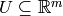 is the set of admissible control inputs,
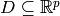 is the set of exogenous disturbances and
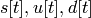 are the continuous state, the control signal and
the exogenous disturbance, respectively, at time
is the state space of the continuous
component of the system,
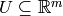 is the set of admissible control inputs,
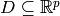 is the set of exogenous disturbances and
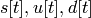 are the continuous state, the control signal and
the exogenous disturbance, respectively, at time  .
.
We consider the case where the sets  are bounded polytopes.
are bounded polytopes.
Let 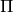 be a finite set of atomic propositions of system variables. Each of the atomic propositions in essentially captures the states of interest. We consider the specification of the form
(2)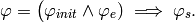
Here, the assumption 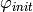 on the initial condition of the system is a propositional formula built from 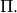 The assumption 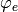 on the environment and the desired behavior 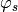 are LTL formulas built from See our wiki for more details on the form of 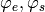.

As illustrated in the figure above, our approach to this embedded control system synthesis consists of the following main steps:
Proposition Preserving Partition of Continuous State Space¶
Given the continuous state space  of the system and the set 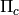 of
propositions on the continuous state of the system, we partition into a finite
number of cells such that all the continuous states in each cell satisfy exactly the
same set of propositions in .
of the system and the set 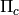 of
propositions on the continuous state of the system, we partition into a finite
number of cells such that all the continuous states in each cell satisfy exactly the
same set of propositions in .
This can be done using the following function call:
- prop2part.prop2part2(state_space, cont_props_dict)[source]
Main function that takes a domain (state_space) and a list of propositions (cont_props), and returns a proposition preserving partition of the state space
The above function returns a proposition preserving partition as a PropPreservingPartition object.
- class prop2part.PropPreservingPartition(domain=None, num_prop=0, list_region=[], num_regions=0, adj=0, trans=0, list_prop_symbol=None)[source]
Partition class with following fields
- domain: the domain we want to partition, type: polytope
- num_prop: number of propositions
- list_region: proposition preserving regions, type: list of Region
- num_regions: length of the above list
- adj: a matrix showing which regions are adjacent
- trans: a matrix showing which region is reachable from which region
- list_prop_symbol: list of symbols of propositions
Continuous State Space Discretization¶
Given a proposition preserving partition of the continuous state space and the evolution of the continuous state as in (1), we refine the partition based on the reachability relation between cells and obtain a finite state abstraction of the evolution of the continuous state, represented by a finite transition system.
CtsSysDyn class is used to define continuous dynamics.
- class discretizeM.CtsSysDyn(A=[], B=[], E=[], Uset=[], Wset=[])[source]
CtsSysDyn class for specifying the continuous dynamics:
s[t+1] = A*s[t] + B*u[t] + E*w[t] u[t] in Uset - polytope object d[t] in Wset - polytope objectA CtsSysDyn object contains the fields A, B, E, Uset and Wset as defined above.
Constructor:
CtsSysDyn ([ A = [][, B = [][, E = [][, Uset = [][, Wset = []]]]]])
Once we have the proposition preserving partition and the continuous dynamics, continuous state space discretization can be done using the following function call:
- discretizeM.discretizeM(part, ssys, N=10, auto=True, minCellVolume=0.10000000000000001, maxNumIterations=5, useClosedLoopAlg=True, useAllHorizonLength=True, useLargeSset=False, timeout=-1, maxNumPoly=5, verbose=0)[source]
Discretize the continuous state space using MATLAB implementation.
Input:
- part: a PropPreservingPartition object
- ssys: a CtsSysDyn object
- N: horizon length
- auto: a boolean that indicates whether to automatically run the MATLAB implementation of discretize.
- minCellVolume: the minimum volume of cells in the resulting partition
- maxNumIterations: the maximum number of iterations
- useClosedLoopAlg: a boolean that indicates whether to use the closed loop algorithm. For the difference between the closed loop and the open loop algorithm, see Borrelli, F. Constrained Optimal Control of Linear and Hybrid Systems, volume 290 of Lecture Notes in Control and Information Sciences. Springer. 2003.
- useAllHorizonLength: a boolean that indicates whether all the horizon length up to probStruct.N can be used. This option is relevant only when the closed loop algorithm is used.
- useLargeSset: a boolean that indicates whether when solving the reachability problem between subcells of the original partition, the cell of the original partition should be used for the safe set.
- timeout: timeout (in seconds) for polytope union operation. If negative, the timeout won’t be used. Note that using timeout requires MATLAB parallel computing toolbox.
- maxNumPoly: the maximum number of polytopes in a region used in computing reachability.
- verbose: level of verbosity
Digital design synthesis¶
The continuous state space discretization generates a finite state abstraction
of the continuous state, represented by a finite transition system.
Each state in this finite transition system corresponds to a cell in the continuous
domain.
A transition 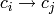 in this finite state system indicates that
from any continuous state 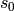 that belongs to cell 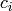,
there exists a sequence of control inputs 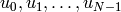
that takes the system to another continuous state  in cell
in cell  .
Hence, under the assumption that the specification is stutter invariant,
we can describe the continuous dynamics by an LTL formula of the form
.
Hence, under the assumption that the specification is stutter invariant,
we can describe the continuous dynamics by an LTL formula of the form
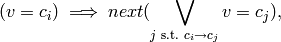
where  is a new discrete variable that describes in which cell
the continuous state is.
is a new discrete variable that describes in which cell
the continuous state is.
Since the partition is proposition preserving, all the continuous states that belong
to the same cell satisfy exactly the same set of propositions on the continuous
state. By the abuse of notation, we write  if all the continuous
states in cell satisfy proposition 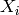.
Then, we can replace any proposition on the continuous state variables
by the formula
if all the continuous
states in cell satisfy proposition 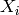.
Then, we can replace any proposition on the continuous state variables
by the formula  .
.
Putting everything together, we now obtain a specification of the form in (2). We can then use the GR(1) Game implementation in JTLV to automatically synthesize a planner that ensures the satisfaction of the specification, taking into account all the possible behaviors of the environment. This can be done using the following steps.
Generate input to JTLV
- jtlvint.generateJTLVInput(env_vars={}, sys_disc_vars={}, spec=[], disc_props={}, disc_dynamics=<prop2part.PropPreservingPartition instance at 0x103ad4710>, smv_file='tmp.smv', spc_file='tmp.spc', file_exist_option='a', verbose=0)[source]
Generate JTLV input files: smv_file and spc_file.
Input:
- env_vars: a dictionary {str : str} or {str : list} whose keys are the names of environment variables and whose values are their possible values, e.g., boolean or {0, 2, ..., 5} or [0, 2, 3, 4, 5].
- sys_disc_vars: a dictionary {str : str} or {str : list} whose keys are the names of discrete system variables and whose values are their possible values.
- spec: a list of two strings that represents system specification of the form assumption -> guarantee; the first string is the assumption and the second string is the guarantee.
- disc_props: a dictionary {str : str} whose keys are the symbols for propositions on discrete variables and whose values are the actual propositions on discrete variables.
- disc_dynamics: a PropPreservingPartition object that represents the transition system obtained from the discretization procedure.
- smv_file: a string that specifies the name of the resulting smv file.
- spc_file: a string that specifies the name of the resulting spc file.
- file_exist_option: a string that indicate what to do when the specified smv_file or spc_file exists. Possible values are: ‘a’ (ask whether to replace or create a new file), ‘r’ (replace the existing file), ‘n’ (create a new file).
- verbose: an integer that specifies the level of verbosity. If verbose is set to 0, this function will not print anything on the screen.
Synthesize the discrete planner
- jtlvint.computeStrategy(smv_file, spc_file, aut_file='', heap_size='-Xmx128m', priority_kind=3, init_option=1, file_exist_option='a', verbose=0)[source]
Compute an automaton satisfying the spec in smv_file and spc_file and store in aut_file. Return the realizability of the spec.
Input:
smv_file: a string that specifies the name of the smv file.
spc_file: a string that specifies the name of the spc file.
aut_file: a string that specifies the name of the file containing the resulting automaton.
heap_size: a string that specifies java heap size.
priority_kind: a string of length 3 or an integer that specifies the type of priority used in extracting the automaton. Possible values of priority_kind are:
- 3 - ‘ZYX’
- 7 - ‘ZXY’
- 11 - ‘YZX’
- 15 - ‘YXZ’
- 19 - ‘XZY’
- 23 - ‘XYZ’
Here X means that the controller tries to disqualify one of the environment assumptions, Y means that the controller tries to advance with a finite path to somewhere, and Z means that the controller tries to satisfy one of his guarantees.
init_option: an integer in that specifies how to handle the initial state of the system. Possible values of init_option are
- 0 - The system has to be able to handle all the possible initial system states specified on the guarantee side of the specification.
- 1 (default) - The system can choose its initial state, in response to the initial environment state. For each initial environment state, the resulting automaton contains exactly one initial system state, starting from which the system can satisfy the specification.
- 2 - The system can choose its initial state, in response to the initial environment state. For each initial environment state, the resulting automaton contain all the possible initial system states, starting from which the system can satisfy the specification.
file_exist_option: a string that indicate what to do when the specified aut_file exists. Possible values are: ‘a’ (ask whether to replace or create a new file), ‘r’ (replace the existing file), ‘n’ (create a new file).
verbose: an integer that specifies the level of verbosity.
Construct the automaton
- class automaton.Automaton(states_or_file=[], varnames=[], verbose=0)[source]
Automaton class for representing a finite state automaton. An Automaton object contains the following field:
- states: a list of AutomatonState objects.
Automaton([states_or_file, varname, verbose]) constructs an Automaton object based on the following input:
- states_or_file: a string containing the name of the aut file to be loaded or a list of AutomatonState objects to be assigned to the states of this Automaton object.
- varname: a list of all the variable names. If it is not empty and states_or_file is a string representing the name of the aut file to be loaded, then this function will also check whether the variables in aut_file are in varnames.
- Step 1 and 2 above can be combined using the following function:
- jtlvint.synthesize(env_vars={}, sys_disc_vars={}, spec='', disc_props={}, disc_dynamics=<prop2part.PropPreservingPartition instance at 0x103ad4440>, smv_file='tmp.smv', spc_file='tmp.spc', aut_file='', heap_size='-Xmx128m', priority_kind=3, init_option=1, file_exist_option='a', verbose=0)[source]
Compute an automaton satisfying spec. Return the realizability of spec. If spec is realizable, the resulting automaton will be stored in the aut_file. Otherwise, the counter examples will be stored. This function essentially combines generateJTLVInput and computeStrategy
Input:
- env_vars: a dictionary {str : str} or {str : list} whose keys are the names of environment variables and whose values are their possible values, e.g., boolean or {0, 2, ..., 5} or [0, 2, 3, 4, 5].
- sys_disc_vars: a dictionary {str : str} or {str : list} whose keys are the names of discrete system variables and whose values are their possible values.
- spec: a list of two strings that represents system specification of the form assumption -> guarantee; the first string is the assumption and the second string is the guarantee.
- disc_props: a dictionary {str : str} whose keys are the symbols for propositions on discrete variables and whose values are the actual propositions on discrete variables.
- disc_dynamics: a PropPreservingPartition object that represents the transition system obtained from the discretization procedure.
- smv_file: a string that specifies the name of the resulting smv file.
- spc_file: a string that specifies the name of the resulting spc file.
- aut_file: a string that specifies the name of the file containing the resulting automaton.
- heap_size: a string that specifies java heap size.
- priority_kind: a string of length 3 or an integer that specifies the type of priority used in extracting the automaton. See the documentation of the computeStrategy function for the possible values of priority_kind.
- init_option: an integer in that specifies how to handle the initial state of the system. See the documentation of the computeStrategy function for the possible values of init_option.
- file_exist_option: a string that indicate what to do when the specified smv_file or spc_file exists. Possible values are: ‘a’ (ask whether to replace or create a new file), ‘r’ (replace the existing file), ‘n’ (create a new file).
- verbose: an integer that specifies the level of verbosity. If verbose is set to 0, this function will not print anything on the screen.
Example 1: Robot Motion Planning with only Discrete Decisions¶
This example is provided in examples/robot_discrete_simple.py. It illustrates the use of the jtlvint module in synthesizing a planner for a robot that only needs to make discrete decision.

We consider the robot moving around the regions as shown in the above figure while receiving externally triggered park signal. The specification of the robot is
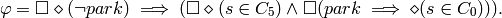
We cannot, however, deal with this specification directly since it is not in the form of GR[1]. An equivalent GR[1] specification of the above specification can be obtained by introducing an auxiliary discretey system variable 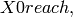 initialized to True. The transition relation of is given by 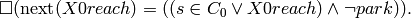
To automatically synthesize a planner for this robot, we first import the necessary modules.
from prop2part import Region, PropPreservingPartition
from jtlvint import *
from automaton import *
from grsim import grsim
Specify the smv file, spc file and aut file.
testfile = 'robot_discrete_simple'
path = os.path.abspath(os.path.dirname(sys.argv[0]))
smvfile = os.path.join(path, 'specs', testfile+'.smv')
spcfile = os.path.join(path, 'specs', testfile+'.spc')
autfile = os.path.join(path, 'specs', testfile+'.aut')
Specify the environment variables.
env_vars = {'park' : 'boolean'}
Specify the discrete system variable.
sys_disc_vars = {'X0reach' : 'boolean'}
Specify the transition system representing the continuous dynamics. First, we list the propositions on the continuous states. Here, these propositions specify in which cell the robot is, i.e., Xi means that the robot is in cell Ci. Then, we specify the regions. Note that the first argument of Region(poly, prop) should be a list of polytopes. But since we are not dealing with the actual controller, we will just fill it with a string (think of it as a name of the region). The second argument of Region(poly, prop) is a list that specifies which propositions in cont_props above is satisfied. As specified below, regioni satisfies proposition Xi. Finally, we specify the adjacency between regions. disc_dynamics.adj[i][j] = 1 if starting from region j, the robot can move to region i while only staying in the union of region i and region j.
disc_dynamics = PropPreservingPartition(list_region=[], list_prop_symbol=[])
disc_dynamics.list_prop_symbol = ['X0', 'X1', 'X2', 'X3', 'X4', 'X5']
disc_dynamics.num_prop = len(disc_dynamics.list_prop_symbol)
region0 = Region('C0', [1, 0, 0, 0, 0, 0])
region1 = Region('C1', [0, 1, 0, 0, 0, 0])
region2 = Region('C2', [0, 0, 1, 0, 0, 0])
region3 = Region('C3', [0, 0, 0, 1, 0, 0])
region4 = Region('C4', [0, 0, 0, 0, 1, 0])
region5 = Region('C5', [0, 0, 0, 0, 0, 1])
disc_dynamics.list_region = [region0, region1, region2, region3, region4, region5]
disc_dynamics.num_regions = len(disc_dynamics.list_region)
disc_dynamics.trans = [[1, 1, 0, 1, 0, 0], \
[1, 1, 1, 0, 1, 0], \
[0, 1, 1, 0, 0, 1], \
[1, 0, 0, 1, 1, 0], \
[0, 1, 0, 1, 1, 1], \
[0, 0, 1, 0, 1, 1]]
Specification.
assumption = 'X0reach & []<>(!park)'
guarantee = '[]<>X5 & []<>(X0reach)'
guarantee += ' & [](next(X0reach) = ((X0 | X0reach) & !park))'
Generate input to JTLV.
prob = generateJTLVInput(env_vars, sys_disc_vars, [assumption, guarantee], \
{}, disc_dynamics, smvfile, spcfile, verbose=2)
Check realizability.
realizability = checkRealizability(smv_file=smvfile, spc_file=spcfile, \
aut_file=autfile, verbose=3)
Construct an automaton.
computeStrategy(smv_file=smvfile, spc_file=spcfile, aut_file=autfile, \
priority_kind=3, verbose=3)
Run simulation.
num_it = 30
init_state = {}
init_state['X0reach'] = True
env_states = []
for i in xrange(0,num_it):
if (i%3 == 0):
env_states.append({'park':True})
else:
env_states.append({'park':False})
states = grsim(aut, init_state, env_states, num_it)
Example 2: Robot Motion Planning¶
This example is provided in examples/robot_simple.py. It is an extension of the previous example by including continuous dynamics.
First, we import the necessary modules, specify the smv file, spc file and aut file, and specify the environment and the discrete system variables as in the previous example.
from prop2part import Polytope, Region, PropPreservingPartition, prop2part2
from discretizeM import CtsSysDyn, discretizeM
from jtlvint import *
from automaton import *
from numpy import array
from grsim import grsim
testfile = 'robot_simple'
path = os.path.abspath(os.path.dirname(sys.argv[0]))
smvfile = os.path.join(path, 'specs', testfile+'.smv')
spcfile = os.path.join(path, 'specs', testfile+'.spc')
autfile = os.path.join(path, 'specs', testfile+'.aut')
env_vars = {'park' : 'boolean'}
sys_disc_vars = {'X0reach' : 'boolean'}
Next, we specify the continuous dynamics.
This includes specifying the continuous state space, propositions on continuous variables,
and the dynamics.
The robot dynamics in this case is 
cont_state_space = Polytope(array([[1., 0.],[-1., 0.], [0., 1.], [0., -1.]]), \
array([[3.],[0.],[2.],[0.]]))
cont_props = {}
for i in xrange(0, 3):
for j in xrange(0,2):
prop_sym = 'X' + str(3*j + i)
cont_props[prop_sym] = Polytope(array([[1., 0.],[-1., 0.], [0., 1.], [0., -1.]]), \
array([[float(i+1)],[float(-i)],[float(j+1)],[float(-j)]]))
A = array([[1.1052, 0.],[ 0., 1.1052]])
B = array([[1.1052, 0.],[ 0., 1.1052]])
U = Polytope(array([[1., 0.],[-1., 0.], [0., 1.], [0., -1.]]), array([[1.],[1.],[1.],[1.]]))
sys_dyn = CtsSysDyn(A,B,[],U,[])
Now, we can construct the proposition preserving partition of the continuous state space and discretize the continuous state space based on the dynamics.
cont_partition = prop2part2(cont_state_space, cont_props)
disc_dynamics = discretizeM(cont_partition, sys_dyn, verbose=2)
The rest is the same as in the previous example. We specify system specification, generate input to JTLV, check realizability, construct an automaton, and run simulation.
prob = generateJTLVInput(env_vars, sys_disc_vars, [assumption, guarantee], \
{}, disc_dynamics, smvfile, spcfile, verbose=2)
realizability = checkRealizability(smv_file=smvfile, spc_file=spcfile, \
aut_file=autfile, verbose=3)
computeStrategy(smv_file=smvfile, spc_file=spcfile, aut_file=autfile, \
priority_kind=3, verbose=3)
aut = Automaton(autfile, [], 3)
num_it = 30
init_state = {}
init_state['X0reach'] = True
env_states = []
for i in xrange(0,num_it):
if (i%3 == 0):
env_states.append({'park':True})
else:
env_states.append({'park':False})
states = grsim(aut, init_state, env_states, num_it)
Defining a Synthesis Problem¶
SynthesisProb class provides a self-contained structure for defining an embedded control software synthesis problem. It contains several useful functions that allow the problem to be solved in one shot, combining the 3 steps as previously described.
- class rhtlp.SynthesisProb(**args)[source]
SynthesisProb class for specifying a planner synthesis problem. A SynthesisProb object contains the following fields:
- env_vars: a dictionary {str : str} whose keys are the names of environment variables and whose values are their possible values, e.g., boolean or {0, 2, 3, 4, 5}.
- sys_vars: a dictionary {str : str} whose keys are the names of system variables and whose values are their possible values.
- spec: a GRSpec object that specifies the specification of this synthesis problem.
- disc_cont_var: the name of the continuous variable after the discretization.
- disc_dynamics: a list of Region objects corresponding to the partition of the continuous state space.
Constructor:
SynthesisProb ([ file = ‘’[, verbose = 0]]): construct this SynthesisProb object from file
- file: the name of the rhtlp file to be parsed. If file is given, the rest of the inputs to this function will be ignored.
SynthesisProb ([ env_vars = {}[, sys_disc_vars = {}[, disc_props = {}[, disc_dynamics = None[, spec = GRSpec()[, verbose = 0]]]]]])
SynthesisProb ([ env_vars = {}[, sys_disc_vars = {}[, disc_props = {}[, cont_state_space = None[, cont_props = {}[, sys_dyn = None[, spec = GRSpec()[, verbose = 0]]]]]]]])
- env_vars: a dictionary {str : str} or {str : list} whose keys are the names of environment variables and whose values are their possible values, e.g., boolean or {0, 2, ..., 5} or [0, 2, 3, 4, 5].
- sys_disc_vars: a dictionary {str : str} or {str : list} whose keys are the names of discrete system variables and whose values are their possible values.
- disc_props: a dictionary {str : str} whose keys are the symbols for propositions on discrete variables and whose values are the actual propositions on discrete variables.
- disc_dynamics: a PropPreservingPartition object that represents the transition system obtained from the discretization procedure. if disc_dynamics is given, cont_state_space, cont_props and sys_dyn will be ignored.
- cont_state_space: a Polytope object that represent the state space of the continuous variables
- cont_props: a dictionary {str : Polytope} whose keys are the symbols for propositions on continuous variables and whose values are polytopes that represent the region in the state space in which the corresponding proposition hold.
- sys_dyn: a CtsSysDyn object that specifies the dynamics of the continuous variables
- spec: a GRSpec object that specifies the specification of this synthesis problem
- verbose: an integer that specifies the level of verbosity.
Example 3: Robot Motion Planning using SynthesisProb¶
This example is provided in examples/robot_simple2.py. It is exactly the same problem as Example 2 but solved using SynthesisProb, instead of the jtlvint module.
First, we import the necessary modules and specify the environment and the discrete system variables and the continuous dynamics. Note that we don’t have to specify the smv file, spc file and aut file as in the previous examples.
from prop2part import Polytope, Region, PropPreservingPartition
from discretizeM import CtsSysDyn, discretizeM
from spec import GRSpec
from rhtlp import SynthesisProb
from numpy import array
from grsim import grsim
env_vars = {'park' : 'boolean'}
sys_disc_vars = {'X0reach' : 'boolean'}
cont_state_space = Polytope(array([[1., 0.],[-1., 0.], [0., 1.], [0., -1.]]), \
array([[3.],[0.],[2.],[0.]]))
cont_props = {}
for i in xrange(0, 3):
for j in xrange(0,2):
prop_sym = 'X' + str(3*j + i)
cont_props[prop_sym] = Polytope(array([[1., 0.],[-1., 0.], [0., 1.], [0., -1.]]), \
array([[float(i+1)],[float(-i)],[float(j+1)],[float(-j)]]))
A = array([[1.1052, 0.],[ 0., 1.1052]])
B = array([[1.1052, 0.],[ 0., 1.1052]])
U = Polytope(array([[1., 0.],[-1., 0.], [0., 1.], [0., -1.]]), array([[1.],[1.],[1.],[1.]]))
sys_dyn = CtsSysDyn(A,B,[],U,[])
Next, we specify system specification. Here, specification is a GRSpec object, instead of a list of length 2 as in the previous examples.
spec = GRSpec()
spec.env_prog = '!park'
spec.sys_init = 'X0reach'
spec.sys_safety = 'next(X0reach) = ((X0 | X0reach) & !park)'
spec.sys_prog = ['X5', 'X0reach']
Now, we have all the necessary elements to construct a synthesis problem.
prob = SynthesisProb(env_vars = env_vars, sys_disc_vars = sys_disc_vars, \
disc_props = {}, cont_state_space = cont_state_space, \
cont_props = cont_props, sys_dyn = sys_dyn, spec=spec, verbose=2)
Once a SynthesisProb object is constructed, we can check the realizability of this problem and construct the automaton.
realizability = prob.checkRealizability(verbose=2)
aut = prob.synthesizePlannerAut(verbose=2)
Finally, we can run the simulation as before.
num_it = 30
init_state = {}
init_state['X0reach'] = True
env_states = []
for i in xrange(0,num_it):
if (i%3 == 0):
env_states.append({'park':True})
else:
env_states.append({'park':False})
states = grsim(aut, init_state, env_states, num_it)
Receding Horizon Temporal Logic Planning¶
For systems with a certain structure, the computational complexity of the planner synthesis can be alleviated by solving the planning problems in a receding horizon fashion, i.e., compute the plan or strategy over a “shorter” horizon, starting from the current state, implement the initial portion of hte plan, move the horizon one step ahead, and recompute. This approach essentially reduces the planner synthesis problem into a set of smaller problems. To ensure that this “receding horizon” framework preserves the desired system-level temporal properties, certain sufficient conditions need to be satisfied.
We consider a specification of the form
(3)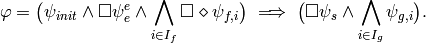
Given a specification of this form, we first construct a finite state abstraction
of the physical system.
Then, for each 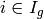, we organize the system states
into a partially ordered set 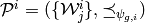
where 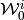 are the set of states satisfying
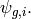
For each  , we define a short-horizon specification 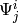
associated with 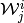 as
, we define a short-horizon specification 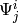
associated with 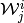 as
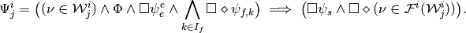
Here,  describes receding horizon invariants.
needs to be defined such that 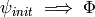 is a tautology.
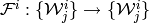 is a mapping
such that 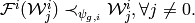
describes receding horizon invariants.
needs to be defined such that 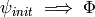 is a tautology.
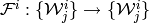 is a mapping
such that 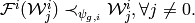
 essentially defines intermediate goal for starting in
essentially defines intermediate goal for starting in

The above figure provides a graphical description of the receding horizon strategy
for a special case where for each
 ,
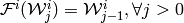
and 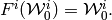
Please refer to our paper for more details.
,
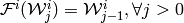
and 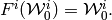
Please refer to our paper for more details.
Short-Horizon Problem¶
A short-horizon problem can be defined using the ShortHorizonProb class.
- class rhtlp.ShortHorizonProb(W='', FW=[], Phi='', global_prob=<rhtlp.SynthesisProb instance at 0x1027433b0>, **args)[source]
ShortHorizonProb class for specifying a short horizon problem for receding horizon temporal logic planning. A ShortHorizonProb object contains the following fields:
- W: a proposition that specifies a set W of states.
- FW: a ShortHorizonProb object or a list of ShortHorizonProb object that specifies the set F(W).
- Phi: a proposition that specifies the receding horizon invariant.
- global_prob: a SynthesisProb object that represents the global problem.
Constructor:
ShortHorizonProb ([ W = ‘’[, FW = [][, Phi = ‘’[, global_prob = SynthesisProb()[, file = ‘’]]]]])
ShortHorizonProb ([ W = ‘’[, FW = [][, Phi = ‘’[, global_prob = SynthesisProb()[, env_vars = {}[, sys_disc_vars = {}[, disc_props = {}[, disc_dynamics = None]]]]]]]])
ShortHorizonProb ([ W = ‘’[, FW = [][, Phi = ‘’[, global_prob = SynthesisProb()[, env_vars = {}[, sys_disc_vars = {}[, disc_props = {}[, cont_state_space = None[, cont_props = {}[, sys_dyn = None]]]]]]]]]])
- W: a proposition that specifies a set W of states.
- FW: a ShortHorizonProb object or a list of ShortHorizonProb object that specifies the set F(W).
- Phi: a proposition that specifies the receding horizon invariant.
- global_spec: the global specification of the system.
- file: the name of the rhtlp file to be parsed. If file is given, the rest of the inputs to this function will be ignored.
- env_vars: a dictionary {str : str} or {str : list} whose keys are the names of environment variables and whose values are their possible values, e.g., boolean or {0, 2, ..., 5} or [0, 2, 3, 4, 5].
- sys_disc_vars: a dictionary {str : str} or {str : list} whose keys are the names of discrete system variables and whose values are their possible values.
- disc_props: a dictionary {str : str} whose keys are the symbols for propositions on discrete variables and whose values are the actual propositions on discrete variables.
- disc_dynamics: a PropPreservingPartition object that represents the transition system obtained from the discretization procedure. if disc_dynamics is given, cont_state_space, cont_props and sys_dyn will be ignored.
- cont_state_space: a Polytope object that represent the state space of the continuous variables. Needed only when discretize is True.
- cont_props: a dictionary {str : Polytope} whose keys are the symbols for propositions on continuous variables and whose values are polytopes that represent the region in the state space in which the corresponding proposition hold. if discretize is False, cont_props can be just a list of symbols for propositions on continuous variables.
- sys_dyn: a CtsSysDyn object that specifies the dynamics of the continuous variables. Needed only when discretize is True.
- verbose: an integer that specifies the level of verbosity.
Receding Horizon Temporal Logic Planning Problem¶
A receding horizon temporal logic planning problem contains a collection of short-horizon problems. It can be defined using the RHTLPProb class, which contains many functions such as computePhi() and validate().
- class rhtlp.RHTLPProb(shprobs=[], Phi='True', discretize=False, **args)[source]
RHTLPProb class for specifying a receding horizon temporal logic planning problem. A RHTLPProb object contains the following fields:
- shprobs: a list of ShortHorizonProb objects
- Phi: the invariant for the RHTLP problem
Constructor:
RHTLPProb ([ shprobs = [][, Phi = ‘True’[, discretize = False[, file = ‘’]]]]): construct this SynthesisProb object from file.
RHTLPProb ([ shprobs = [][, Phi = ‘True’[, discretize = False[, env_vars = {}[, ` sys_disc_vars` = {}[, disc_props = {}[, disc_dynamics = None[, spec = GRSpec()]]]]]]]])
RHTLPProb ([ shprobs = [][, Phi = ‘True’[, discretize = False[, env_vars = {}[, sys_disc_vars = {}[, disc_props = {}[, cont_state_space = None[, cont_props = {}[, sys_dyn = None[, spec = GRSpec()]]]]]]])
- shprobs: a list of ShortHorizonProb objects.
- Phi: a string specifying the invariant for the RHTLP problem.
- discretize: a boolean indicating whether to discretize the global problem.
- file: the name of the rhtlp file to be parsed. If file is given, the rest of the inputs to this function will be ignored.
- env_vars: a dictionary {str : str} or {str : list} whose keys are the names of environment variables and whose values are their possible values, e.g., boolean or {0, 2, ..., 5} or [0, 2, 3, 4, 5].
- sys_disc_vars: a dictionary {str : str} or {str : list} whose keys are the names of discrete system variables and whose values are their possible values.
- disc_props: a dictionary {str : str} whose keys are the symbols for propositions on discrete variables and whose values are the actual propositions on discrete variables.
- disc_dynamics: a PropPreservingPartition object that represents the transition system obtained from the discretization procedure. if disc_dynamics is given, cont_state_space, cont_props and sys_dyn will be ignored.
- cont_state_space: a Polytope object that represent the state space of the continuous variables. Needed only when discretize is True.
- cont_props: a dictionary {str : Polytope} whose keys are the symbols for propositions on continuous variables and whose values are polytopes that represent the region in the state space in which the corresponding proposition hold. if discretize is False, cont_props can be just a list of symbols for propositions on continuous variables.
- sys_dyn: a CtsSysDyn object that specifies the dynamics of the continuous variables. Needed only when discretize is True.
- spec: a GRSpec object that specifies the specification of this synthesis problem
- verbose: an integer that specifies the level of verbosity.
- RHTLPProb.computePhi(checktautology=True, verbose=0)[source]
Compute Phi for this RHTLPProb object. Return a boolean that indicates whether a valid Phi exists.
- RHTLPProb.validate(checkcovering=True, excluded_state=[], checkpartial_order=True, checktautology=True, checkrealizable=True, heap_size='-Xmx128m', verbose=0)[source]
Check whether the list of ShortHorizonProb objects satisfies the sufficient conditions for receding horizon temporal logic planning
Example 4: Autonomous Vehicle¶
This example is provided in examples/autonomous_car_road.py. It is a simplified version of the problem presented in our CDC paper
We first import the necessary modules.
from numpy import array
from polytope_computations import Polytope
from discretizeM import CtsSysDyn
from spec import GRSpec
from rhtlp import RHTLPProb, ShortHorizonProb
import math
Specify the road configuration and the problem setup.
roadWidth = 3
roadLength = 10
dpopup = 2
dsr = 3
horizon = 3
Continuous dynamics.
B = array([[1.1052, 0.],[ 0., 1.1052]])
U = Polytope(array([[1., 0.],[-1., 0.], [0., 1.], [0., -1.]]), array([[1.],[1.],[1.],[1.]]))
sys_dyn = CtsSysDyn(A,B,[],U,[])
Variables and propositions.
env_vars = {}
cont_props = {}
for x in xrange(0, roadLength):
for y in xrange(0, roadWidth):
id = str((y*roadLength)+x)
obs = 'obs' + id
cell = 'X' + id
env_vars[obs] = 'boolean'
cont_props[cell] = Polytope(array([[1., 0.], [-1., 0.], [0., 1.], [0., -1.]]), \
array([[x+1.], [-float(x)], [y+1.], [-float(y)]]))
Specification.
spec = GRSpec(env_init='', sys_init='', env_safety='', sys_safety='', \
env_prog='', sys_prog='')
init_cells = range(0, roadLength*(roadWidth-1)+1, roadLength)
# Assumption on the initial state
for id in xrange(0, roadLength*roadWidth):
if (not id in init_cells):
if (len(spec.sys_init) > 0):
spec.sys_init += ' & '
spec.sys_init += '!X' + str(id)
spec.sys_init = '(' + spec.sys_init + ')'
# If started in the left lane, then there is an obstalce in the right lane.
for x in xrange(0, roadLength):
cell = ''
for y in xrange(int(math.floor(roadWidth/2)), roadWidth):
if (len(cell) > 0):
cell += ' | '
cell += 'X' + str(y*roadLength + x)
obs = ''
for obsx in xrange(max([0, x-1]), min([roadLength, x+2])):
if (len(obs) > 0):
obs += ' | '
obs += 'obs' + str(obsx)
if (len(spec.sys_init) > 0):
spec.sys_init += ' &\n\t'
spec.sys_init += '((' + cell + ') -> (' + obs + '))'
for id in init_cells:
obs = 'obs' + str(id)
cell = 'X' + str(id)
# The robot does not collide with an obstacle
if (len(spec.sys_init) > 0):
spec.sys_init += ' &\n\t'
spec.sys_init += '(' + cell + ' -> !' + obs + ')'
# The robot is not surrounded by obstacles
spec.sys_init += ' &\n\t'
spec.sys_init += '(' + cell + ' -> !(' + 'obs' + str(id+1)
if (math.floor(id/roadLength) < roadWidth - 1):
spec.sys_init += ' & obs' + str(id + roadLength)
if (math.floor(id/roadLength) > 0):
spec.sys_init += ' & obs' + str(id - roadLength)
spec.sys_init += '))'
# Assumption on the environment
# Obstacle is always detected before the robot gets too close to it
for x in xrange(0,roadLength):
cell = ''
for j in xrange(max([0, x-dpopup]), min([roadLength, x+dpopup+1])):
for k in xrange(0, roadWidth):
if (len(cell) > 0):
cell += ' | '
cell += 'X' + str(k*roadLength + j)
for k in xrange(0, roadWidth):
obs = 'obs' + str(k*roadLength+x)
if (len(spec.env_safety) > 0):
spec.env_safety += ' &\n\t'
spec.env_safety += '(((' + cell +') & !' + obs + ') -> next(!' + obs + '))'
# Sensing range
for x in xrange(0,roadLength):
cell = ''
for y in xrange(0,roadWidth):
if (len(cell) > 0):
cell += ' | '
cell += 'X' + str(y*roadLength + x)
obs = ''
for j in xrange(x+dsr, roadLength):
for k in xrange(0, roadWidth):
if (len(obs) > 0):
obs += ' & '
obs += '!obs' + str(k*roadLength + j)
for j in xrange(0, x-dsr+1):
for k in xrange(0, roadWidth):
if (len(obs) > 0):
obs += ' & '
obs += '!obs' + str(k*roadLength + j)
if (len(obs) > 0):
if (len(spec.env_safety) > 0):
spec.env_safety += ' &\n\t'
spec.env_safety += '((' + cell + ') -> (' + obs + '))'
# The road is not blocked
for i in xrange(0, roadLength):
for j in xrange(max([0, i-1]), min([i+2, roadLength])):
for k in xrange(max([0,j-1]), min([j+2,roadLength])):
if (len(spec.env_safety) > 0):
spec.env_safety += ' &\n\t'
spec.env_safety += '!(obs' + str(i) + ' & obs' + str(roadLength+j) + \
' & obs' + str(2*roadLength+k) + ')'
for x in xrange(0, roadLength-2):
if (len(spec.env_safety) > 0):
spec.env_safety += ' &\n\t'
spec.env_safety += '((obs' + str(roadLength+x) + ' & obs' + str(roadLength+x+1) + \
') -> (!obs' + str(x+2) + ' & !obs' + str(roadLength+x+2) + \
' & !obs' + str(2*roadLength+x+2) + '))'
# Obstacle does not disappear
for x in xrange(0, roadLength):
for y in xrange(0, roadWidth):
obs = 'obs' + str((y*roadLength)+x)
if (len(spec.env_safety) > 0):
spec.env_safety += ' &\n\t'
spec.env_safety += '(' + obs + ' -> next(' + obs + '))'
# Guarantee
# No collision
for x in xrange(0, roadLength):
for y in xrange(0, roadWidth):
id = str((y*roadLength)+x)
obs = 'obs' + id
cell = 'X' + id
if (len(spec.sys_safety) > 0):
spec.sys_safety += ' &\n\t'
spec.sys_safety += '(' + obs + ' -> !' + cell + ')'
# Stay in the right lane unless the lane is blocked
for x in xrange(0, roadLength):
cell = ''
for y in xrange(int(math.floor(roadWidth/2)), roadWidth):
if (len(cell) > 0):
cell += ' | '
cell += 'X' + str(y*roadLength + x)
obs = ''
for obsx in xrange(max([0, x-1]), min([roadLength, x+2])):
for obsy in xrange(0, int(math.floor(roadWidth/2)+1)):
if (len(obs) > 0):
obs += ' | '
obs += 'obs' + str(obsy*roadLength + obsx)
if (len(spec.sys_safety) > 0):
spec.sys_safety += ' &\n\t'
spec.sys_safety += '((' + cell + ') -> (' + obs + '))'
# Get to the end of the road
final_cells = range(roadLength-1, roadLength*roadWidth, roadLength)
cell = ''
for fcell in final_cells:
if (len(cell) > 0):
cell += ' | '
cell += 'X' + str(fcell)
spec.sys_prog = '(' + cell + ')'
Now, we construct the RHTLPProb object.
rhtlpprob = RHTLPProb(shprobs=[], Phi='True', discretize=False, env_vars = env_vars, \
sys_disc_vars = {}, disc_props = {}, cont_props = cont_props, \
spec = spec)
Add ShortHorizonProb objects to the RHTLPProb object.
for x_init in xrange(0, roadLength):
print 'adding W' + str(x_init)
# Environment variables
env_vars = {}
for y in xrange(0, roadWidth):
for x in xrange(x_init, x_init+horizon):
varname = 'obs' + str((y*roadLength)+x)
env_vars[varname] = 'boolean'
# System continuous variable
sys_cont_vars = ['x', 'y']
cont_state_space = Polytope(array([[1., 0.], [-1., 0.], [0., 1.], [0., -1.]]), \
array([[float(min([x_init+horizon, roadLength]))], \
[float(-x_init)], \
[float(roadWidth)], \
[0.]]))
# W
initCells = range(x_init, x_init+roadLength*(roadWidth-1)+1, roadLength)
W = ''
for i in initCells:
if (len(W) > 0):
W += ' | '
W += 'X' + str(i)
print W
# Phi
Phi = ''
for id in initCells:
obs = 'obs' + str(id)
cell = 'X' + str(id)
# The robot does not collide with an obstacle
if (len(Phi) > 0):
Phi += ' &\n\t'
Phi += '(' + cell + ' -> !' + obs + ')'
# The robot is not surrounded by obstacles
if (id % roadLength < roadLength-1):
Phi += ' &\n\t'
Phi += '(' + cell + ' -> !(' + 'obs' + str(id+1)
if (math.floor(id/roadLength) < roadWidth - 1):
Phi += ' & obs' + str(id + roadLength)
if (math.floor(id/roadLength) > 0):
Phi += ' & obs' + str(id - roadLength)
Phi += '))'
# If started in the left lane, then there is an obstalce in the right lane.
if (math.floor(id/roadLength) >= math.floor(roadWidth/2)):
Phi += ' &\n\t'
obs = ''
x = id % roadLength
for obsx in xrange(max([0, x-1]), min([roadLength, x+2])):
for obsy in xrange(0, int(math.floor(roadWidth/2)+1)):
if (len(obs) > 0):
obs += ' | '
obs += 'obs' + str(obsy*roadLength + obsx)
Phi += '(' + cell + ' -> (' + obs + '))'
rhtlpprob.addSHProb(ShortHorizonProb(W=W, FW=[], Phi=Phi, \
global_prob = rhtlpprob, \
env_vars = env_vars, \
sys_disc_vars = {}, \
disc_props = {}, \
cont_state_space=cont_state_space, \
cont_props = cont_props, \
sys_dyn = sys_dyn))
For each 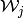, set 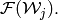
for x_init in xrange(0, roadLength):
FWind = min([roadLength-1, x_init+horizon-1])
rhtlpprob.shprobs[x_init].setFW(FW=rhtlpprob.shprobs[FWind], update=True, verbose=3)
Now, we can validate whether the RHTLPProb object satisfies all the sufficient conditions.
ret = rhtlpprob.validate()
The result of the above validate() call is that the state in which 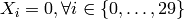 is not in any 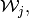 i.e., the sufficient condition that the union of all covers the entire state space is not satisfied. Since we know that we don’t have to deal with the above state, we will exclude it.
excluded_state = {}
for id in xrange(0, roadLength*roadWidth):
excluded_state['X'+str(id)] = False
ret = rhtlpprob.validate(excluded_state=excluded_state)